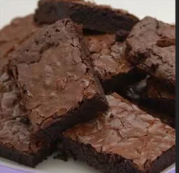

Back
Brownies recipe

a plate of brownies
I am a huge fan of brownies. What's not to like?
Mouthwateringly delicious, scrumptous, chocolatey, gooey, the list goes on.
If you have ever had a bad brownie--who am I kidding, no you have not.
This recipe is from All Recipes. I hope you enjoy making this with your family.
Ingredients
- 1 cup white sugar
- 1/2 cup butter, melted
- 2 large eggs
- 1/2 cup self-rising flour
- 1/2 cup unsweetened cocoa powder
- 1/4 teaspoon salt
- 1 teaspoon vanilla extract
- 1/2 cup chopped walnuts (optional)
Directions
- Preheat the oven to 350 degrees F (175 degrees C). Grease and flour an 8x8 (or 9x9) inch baking pan.
- Beat together sugar and butter in a medium bowl.
Add eggs and mix well. Combine flour, cocoa, and salt; stir into sugar mixture. Mix in vanilla, then stir in walnuts.
Spread evenly into the prepared pan.
- Bake in the preheated oven until edges are firm, 25 to 30 minutes. Cool before cutting into squares.